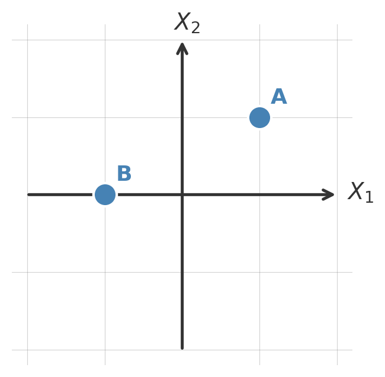
Principal Component Analysis
In this lesson we introduce:
- Principal Component Analysis (PCA) as a technique for dimensionality reduction
- Principal components as directions of maximum variance in multivariate data
- Principal Component Regression (PCR): fitting a regression model on PC scores instead of the original predictors
- Cross-validation to select the optimal number of components in PCR
These notes are based on chapter 6.3 of An Introduction to Statistical Learning with Applications in Python (James et al. 2023). The example data is synthetic and was generated with the aid of Claude Code for the purpose of this lesson.
Principal Component Analysis
Motivation
Imagine you are a whale shark approaching a dense cluster of krill. How would you align yourself to capture as much krill as possible in a single pass?


You would probably align yourself with the direction of greatest spread in the krill cloud, the axis along which the krill are most dispersed. The same intuition applies to data. When we have many correlated predictors, some directions in the data capture a great deal of the variation while others capture very little. Principal Component Analysis (PCA) finds those directions automatically.
The core idea is: with many predictor variables, sometimes it can be useful to simplify our view of our coordiante system to capture as much about the data as possible in as few dimensions as possible.
Axes, coordinates, and projections
A key concept in this lesson is that we are in control of changing the axes we use to present our data. Suppose that we start with our usual axes defined by \(X_1\) and \(X_2\) and we have two ponts with the following coordinates:
| Point | Coordinates in \(X_1, X_2\) |
|---|---|
| A | (1,1) |
| B | (-1,0) |
Visually they look like:
Say now we use a different set of coordinate axes, now given by the green lines \(\tilde{X}_1\) and \(\tilde{X}_2\):
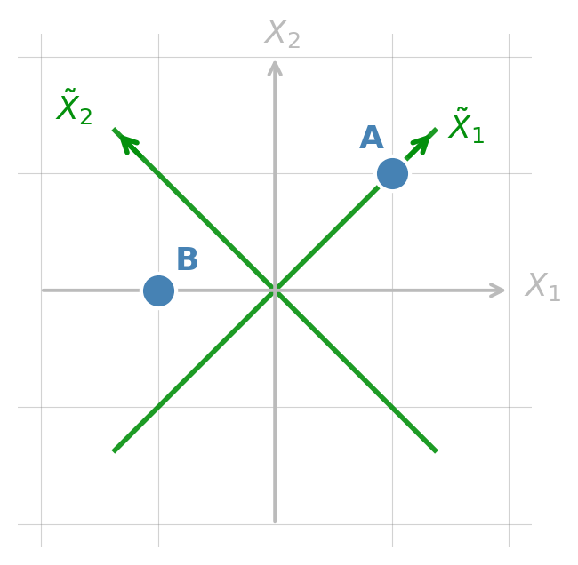
Our points then change coordinates accordingly:
| Point | Coordinates in \(X_1, X_2\) | Coordinates in \(\tilde{X}_1, \tilde{X}_2\) |
|---|---|---|
| A | (1,1) | (\(\sqrt{2}\),0) |
| B | (-1,0) | (-0.71, 0.71) |
Same points, different ways of representing them.
Finally, another core idea in this lesson is that of projecting onto a coordinate, which essentially means only keeping the coordinates for the axes we are interested in. If we project our points onto the \(\tilde{X}_1\) axes the we obtain the following:
| Point | Coordinates in \(X_1, X_2\) | Coordinates in \(\tilde{X}_1, \tilde{X}_2\) | Projection onto \(\tilde{X}_2\) |
|---|---|---|---|
| A | (1,1) | (\(\sqrt{2}\),0) | proj(A) = \(\sqrt{2}\) |
| B | (-1,0) | (-0.71, 0.71) | proj(B) = -0.71 |
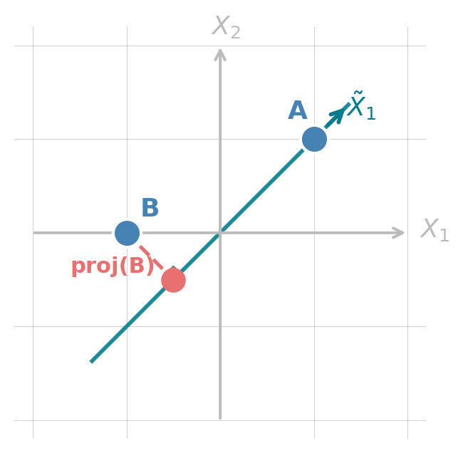
We will keep using these ideas of changing coordinate systems and projecting througout.
What are principal components?
Principal Component Analaysis (PCA) creates a new set of axes so that:
- PC1 points in the direction of maximum variance in the data
- PC2 points in the direction of maximum remaining variance, orthogonal to PC1
- PC3 is orthogonal to both PC1 and PC2 and explains the most remaining variance, and so on.
There are always as many principal components as original variables. But, if PC1 and PC2 explain most of the variance, we’d still be seeing most of the important things about our data if we just use PC1 and PC2 to analyze it. This is the core idea of dimensionality reduction: converting complex multivariate data into fewer dimensions while retaining as much information as possible.
Let’s see an example with three variables:
We generate 600 observations from three variables (x, y, z) with very high pairwise correlations. We can see from the figure below that most of the variation is concentrated along a single dominant axis, with very little spread perpendicular to it.
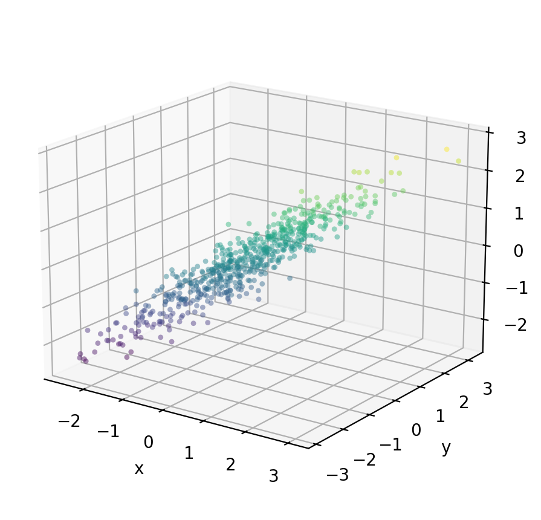
Check-in
Recall that PC1 will be an axis in the direction of maximum variance in the data. Where would you place PC1? What about PC2?
The figure below overlays the three PC directions as full lines through the center of the cloud.
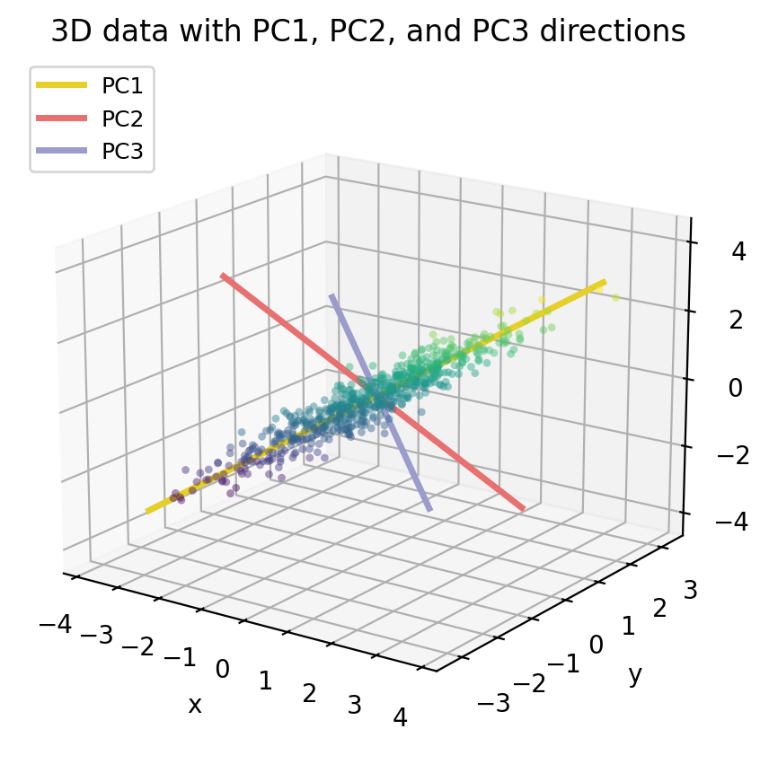
Notice that PC1 (yellow) runs along the long axis of the data cloud, this is direction where the data varies the most. PC2 (salmon) is perpendicular to PC1 and captures the remaining spread. PC3 (lavender) points through the thinest dimension of the cloud and explains almost no variance.
PCA gives us a new coordinate system whose axes are these three PC directions. If we re-express every data point in thie new coordinates given by the principal components (using PC scores instead of x/y/z coordinates), the data cloud becomes axis-aligned. The plot below shows the data in that new PC coordinate system: the cloud is stretched along PC1 and very flat along PC2 and PC3.
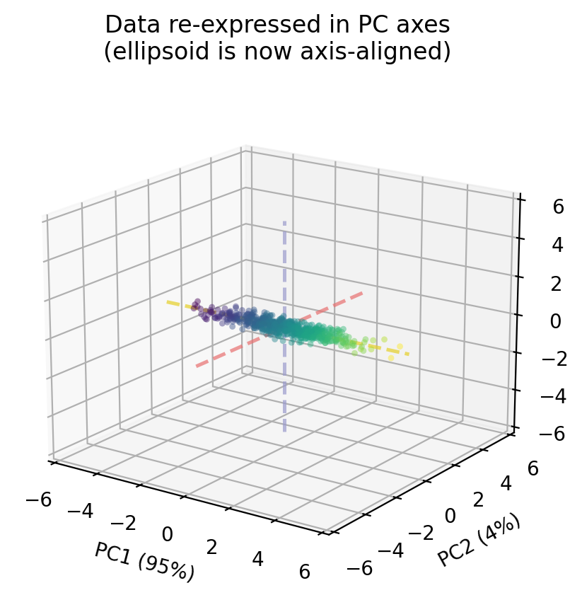
For each data point \((x, y, z)\) the scores will be the new coordinates of the point in the new cartesian system defined by the principal componentes PC1, PC2, PC3.
Because PC1 alone captures 95 % of the variance, if we project onto two dimensions by keeping only PC1 and PC2, we retain almost all of the structure in the data. The PC3 dimension, which we drop, contains only 1.1 % of the variance, so very little information is lost.
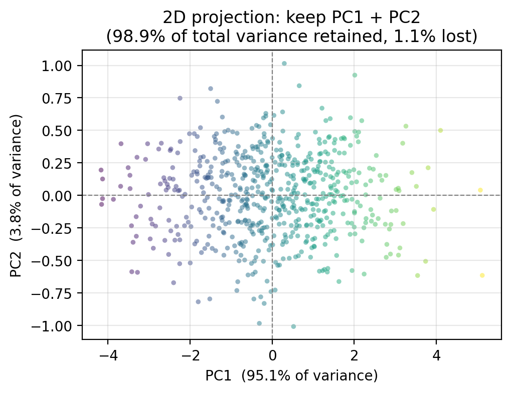
Through this example we can see that PCA creates a new set of axes ,the principal components (PCs) and each of our observations gets a new coordinate in this new system. By projecting our observations onto a subset of the principal components, we can get a simpler view of our data without (hopefully) losing much infromation.
Proportion of variance explained
Every PC captures a certain share of the total variance in the data, this is the proportion of variance explained (PVE) by \(m\)-th PC. The PVE values always sum to 1 across all \(p\) components, since together the PCs account for all the variance in the original data. We are usually interested in how much of that total is concentrated in the first few components. For our example data, we can visualize the PVE for each principal component in a scree plot such as the one on the left-hand side, or see the cumulate PVE as in the right-hand side plot.
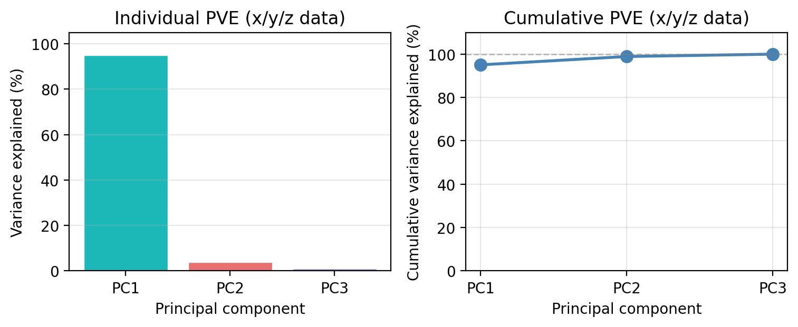
We see that PC1 alone captures 95.1 % of all the variance in the three variables. PC2 accounts for 3.8 % and PC3 for only 1.1 %. Together, PC1 and PC2 retain 98.9 % of the total variance, which is why the 2D projection we showed earlier preserved the structure of the data so well.
This is the key decision in any PCA workflow: how many components do we keep? A common heuristic is to keep enough components to explain 90–95% of the total variance, or to look for an “elbow” in the individual PVE bar chart where the bars drop sharply. We will revisit this decision with a more challenging dataset in the next section.
Principal Component Regression
Notice that so far we have not referenced the response variable. PCA summarizes the variability structure of the predictors without reference to the response. Principal Component Regression (PCR) connects that structure to the response variable to obtain simple models and better predictions. The guiding idea is that the directions in which the predictors show the most variation are often also the directions most strongly associated with the response. This is an assumption, but it is a reasonable in many real settings.
Let’s see this with a concrete example using our 3D \(x\)/\(y\)/\(z\) data. Suppose we observe a response variable \(Y\) that depends on all three predictors. In our data, the variable \(Y\) is generated by:
\[Y = 2x + 2y + 2z + \varepsilon.\]
So the true coefficients are 2 for all predictors.
If we decided to model \(Y\) using the three predictors \(x\)/\(y\)/\(z\) and a standard multiple linear regression fit by OLS then, our model would be:
\[\hat{Y} = \hat{\beta}_0 + \hat{\beta}_x \cdot x + \hat{\beta}_y \cdot y + \hat{\beta}_z \cdot z\]
A standard multiple linear regression (OLS) must then estimate three separate coefficients, one for each predictor:
Predictor OLS coefficient
x 2.039
y 1.884
z 2.127
OLS intercept: -0.072 | OLS R²: 0.944Instead of using all three variables, we can instead replace all three predictors with PC1 as our single variable. Since PC1 captures 95.1 % of the variance in \(x\), \(y\), and \(z\), it summarizes almost all information in the three variables with one number. The regression model becomes then a simple linear regression:
\[\hat{Y} = \hat{\alpha}_0 + \hat{\alpha}_1 \cdot \text{PC1}\]
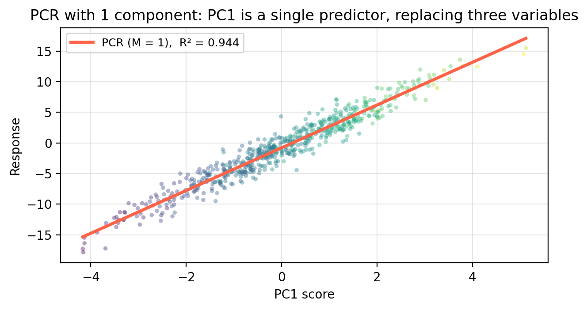
Model Parameters Train R² Test MSE
OLS (3 predictors: x, y, z) 3 0.944 2.112
PCR (M = 1 component) 1 0.944 2.095
PCR (M = 2 components) 2 0.944 2.110Train R² and Test MSE tell different stories. Train R² is computed on the 450 observations used to fit each model — OLS can overfit by spreading coefficients across 3 correlated predictors, slightly inflating its training R². Test MSE is evaluated on the 150 held-out observations OLS has never seen. PCR with just 1 component achieves nearly the same test MSE as OLS despite using only a single predictor, confirming that almost all predictive signal lives in PC1.
General setup
We apply \(PCA\) and \(PCR\) when we are in the context of multiple linear regression. This is, we have \(p\) predictors \(X_1, \ldots, X_p\) and a response variable \(Y\) that we assume are related by
\[Y = \hat{\beta}_0 + \hat{\beta}_1 X_1 + \cdots + \hat{\beta}_p X_p.\]
\(PCA\) replaces the original coordinates for our data: instead of using the predictors \(X_1, \ldots, X_p\), are our new axes are the principal components PC1, …, PC\(p\). We can then project our data onto a small number of principal components to simplify our set of observations data.
The response variable \(Y\) comes in when we replace the original \(p\) predictors with \(M \leq p\) principal components before fitting the regression using OLS on the projected observations.
Concretely, PCR works by doing the following steps:
- Standardize the predictors (mean 0, SD 1)
- Compute the principal components of the standardized predictors
- Project each observation onto the first \(M\) components.
- Fit ordinary least squares of \(Y\) on this new data.
The key tuning parameter is \(M\). When \(M = p\) (meaning you are using all the principal components), PCR is equivalent to OLS. \(M\) is chosen by cross-validation, in the same way as \(\lambda\) for ridge and lasso.
Exercise: meadow plant diversity
We now apply PCA and PCR to the EcoRich dataset from the previous lesson: 200 mountain meadow survey plots with 8 environmental predictors (precip, temp, forest_cover, soil_N, elevation, slope, aspect, canopy) and response species_richness. Work through each check-in before expanding the discussion.
Check-in: Proportion of variance explained
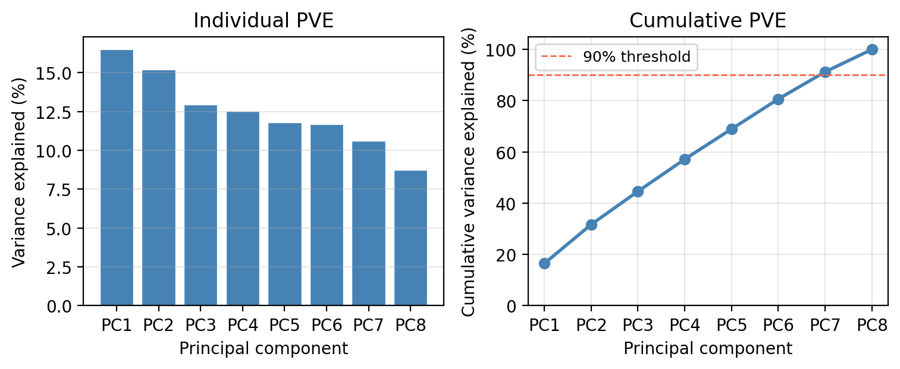
Check-in
Looking at the scree plot above:
How many components are needed to explain at least 90% of the total variance in the 8 predictors?
Discussion
Seven components are needed to explain at least 90% variance in the predictors.
Check-in: Selecting M via cross-validation
The figure below shows the 10-fold CV-MSE for each value of \(M\) from 1 to 8.
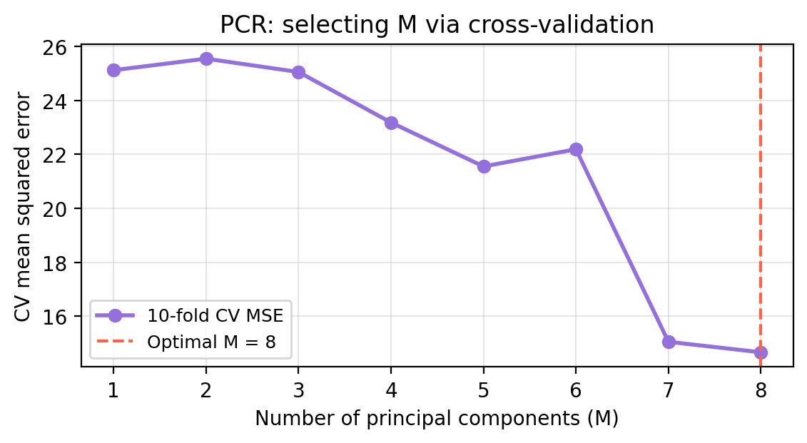
Check-in
- What is the optimal number of components selected by cross-validation?
- At \(M =\) 8 (all components), what is the relationship between PCR and OLS? How are their CV-MSE related?
Discussion
The optimal \(M\) selected by CV is 8, meaning retaining 8 principal component(s) gives the best out-of-sample prediction accuracy.
When \(M = p\), the \(p\) PC scores span exactly the same space as the \(p\) original predictors — PCA is a rotation, not a reduction. So PCR at \(M = p\) is identical to OLS. The CV-MSE at the rightmost point in the plot is therefore the OLS CV-MSE.
Check-in: Comparing PCR, ridge, and lasso
Method CV-MSE
OLS (all 8 predictors) 14.664
PCR (M = 8) 14.664
Ridge (CV-optimal λ) 14.628
Lasso (CV-optimal λ) 14.496
Check-in
Does PCR improve on OLS? Is this the direction you expected based on the bias-variance tradeoff?
Which method performs best? Does this make sense given the structure of the true data-generating model — 8 predictors, 2 with true coefficient of zero and several with moderate effects?
What is a key limitation of PCR compared to lasso, given this data-generating model?
Discussion
PCR should improve on OLS here because OLS overfits when the noise level is moderate and the predictors include irrelevant ones. Reducing to the most informative PC directions lowers variance at a small cost in bias.
Lasso tends to perform best on this dataset because it can exactly zero out the two truly irrelevant predictors (
aspectandcanopy), directly matching the structure of the true model. Ridge is competitive when many predictors have moderate non-zero effects. PCR is effective when the response is well-explained by a few dominant environmental gradients — which is approximately true here, but not perfectly so.PCR cannot perform variable selection: it retains all original predictors in each PC (with varying loadings) and cannot set any loading to exactly zero. In a truly sparse setting — where a small number of predictors matter and the rest are pure noise — lasso has a structural advantage over PCR. PCR works best when the signal is spread across many predictors that share a common underlying structure.
References
James, Gareth, Daniela Witten, Trevor Hastie, Robert Tibshirani, and Jonathan E. Taylor. 2023. An Introduction to Statistical Learning: With Applications in Python. Springer Texts in Statistics. Cham: Springer.